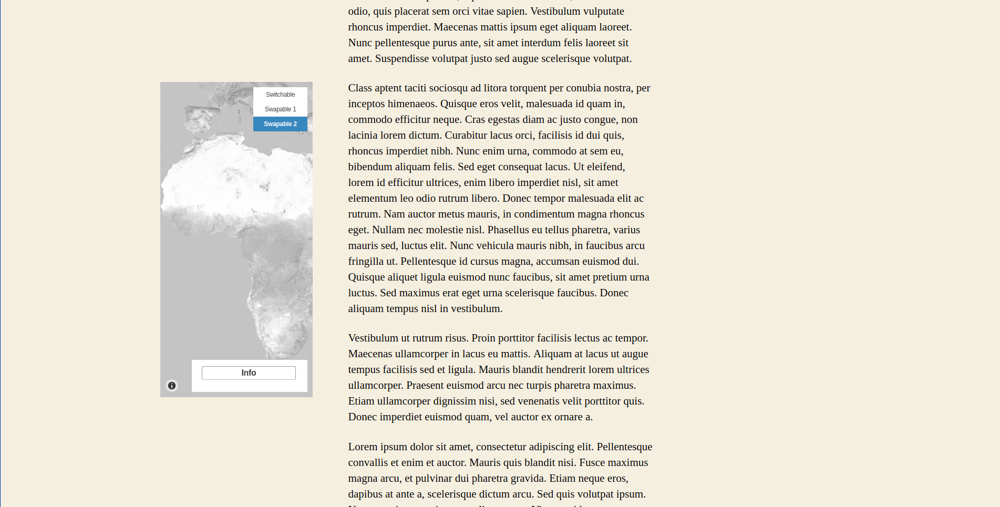

Map block
After creating maps, it is possible to display them apart or inside a block. This functionality makes possible to group maps, increasing your post organization.
Displaying a map apart
When creating a new post, note that is available a new block category: JEO.

Selecting JEO Map block, you can search for any map you've created.

With a map selected, you are able to choose an optional alignment (Left, Right, Centre, Wide Width or Full Width). Centre is the standard alignment.

Left

Right

Wide Width

Full Width

Displaying grouped maps
Besides the alignment option, there's also a group functionality available to arrange maps.

Visualizing a map into a post
If your map has more than one layer, you can swap them and select which one do you want to see, depending on the map layer settings. Check out more about map layers here